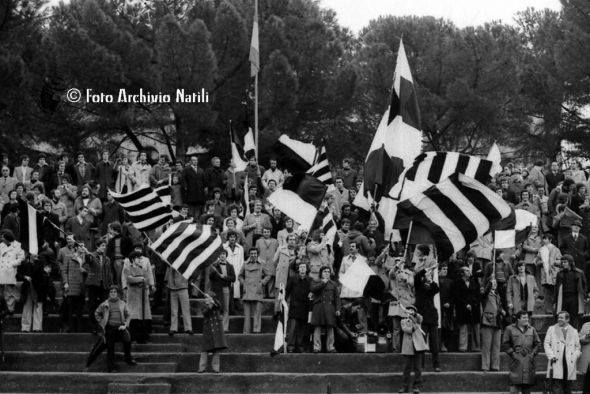
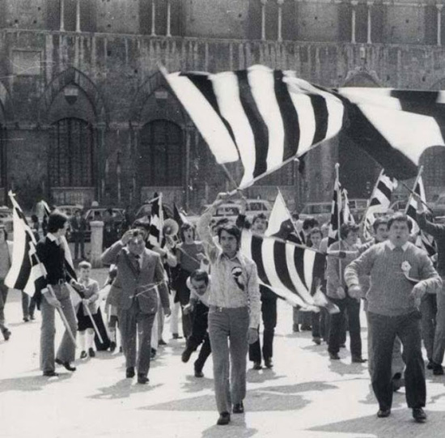

|
| |
Il 21 novembre 1970 un gruppo di amici uniti da un elemento comune, l'amore per la Robur, dà vita ad una associazione che ha come scopo unico quello di supportare la squadra di calcio di Siena. L'associazione prende originariamente il nome di Club Bianconero, ma ben presto muta la sua ragione sociale in "Siena Club Fedelissimi", o, come sono universalmente conosciuti in città, nello stadio e negli stadi, "I Fedelissimi". La decisione nasce come gesto di rabbiosa reazione nei confronti della crisi che il calcio senese sta attraversando e del calo di interesse e di sostegno della città nei confronti della Robur.

Fra i fondatori (anzi, alcuni lo considerano il vero motore dell'iniziativa) c'è Piero Babbini, nella cui abitazione si tiene la riunione della sera del 21 novembre. Tifoso, fotografo professionista di grandissimo valore, capace di fare fotografie impossibili (era celebre per essere il migliore a cogliere l'attimo in cui il pallone si infilava nella rete, cosa non comune in epoca di macchine fotografiche analogiche, pre-digitali), era solito aspettare all'imbocco della scala che porta agli spogliatoi l'uscita della squadra del Siena segnalandone l'arrivo ai tifosi sulle gradinate sventolando la sciarpa bianco nera, in modo che già dall'uscita del primo giocatore la squadra fosse salutata dal boato e dall'incitamento dei tanti "cuori bianco-neri", come amiamo definirci noi senesi che ogni domenica ci facciamo venire il nodo allo stomaco per amore dei nostri colori.
Babbini, peraltro, ebbe una vicenda particolare. A inizio degli anni Ottanta dette vita a una comunità religiosa, in Valdarbia, vicino a Sant'Ansano a Dofana, della quale, fino allo scioglimento, fu leader con il nome di "apostolo Pietro". I suoi seguaci sostenevano che fosse in grado di compiere miracoli.
All'inizio - come ricorda Nicola Natili in una intervista fattagli da Augusto Mattioli - i Fedelissimi erano sì e no una ventina. Si riunivano nel solo locale che avevano a disposizione - una cantina - ma non fecero mancare una sola volta il loro sostegno, la loro passione alla squadra bianco-nera.

Poi il loro numero crebbe considerevolmente e da allora, non hanno mai smesso di far sentire la loro presenza nei 45 anni che sono anche quelli che hanno visto il calcio senese arrancare dalle serie C1 e C2 fino a quello che, allora, nel 2000, parve un miracolo, la serie B, prima di un miracolo ancora più grande, tre anni dopo, con l'Olimpo della serie A.
Ma i Fedelissimi sono rimasti tali e anche quando l'Olimpo non ha più accolto la Robur, anche quando la squadra ha dovuto ricominciare dalla serie Dilettanti.
Loro sono sempre stati e continuano ad essere lì, domenica dopo domenica; in casa e in trasferta; con la stessa passione, lo stesso calore e (cosa di non poco conto da sottolineare) con la stessa correttezza, a farsi carico dell'amore per la Siena del calcio. Tra i fondatori dei Fedelissimi ricordiamo solo (e non ce ne vogliano gli altri) due nomi notissimi: Lorenzo Mulinacci (attuale presidente) e Nicola Natili (a lui si devono gran parte dei libri scritti sulla storia e le vicende della Robur).
E sempre “Forza vecchio cuore bianconero!”.
|

 ACCADDE OGGI
ACCADDE OGGI